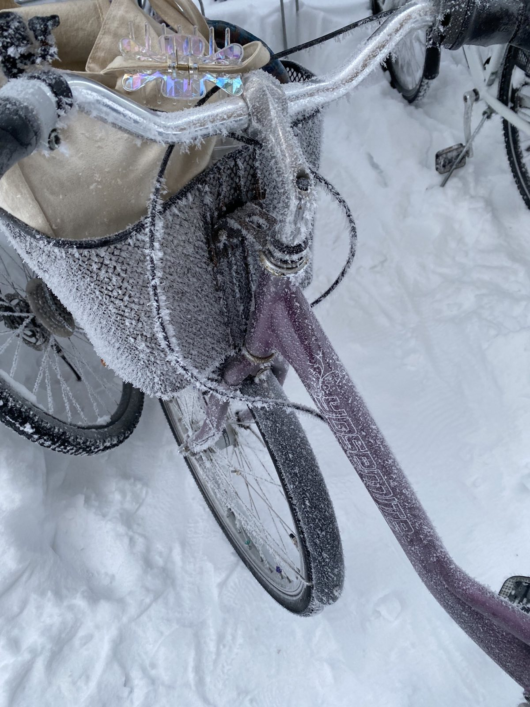

"Rimfrost, renkost", skaldar Rudolf
och blir plötsligt väldigt
sugen på kraftfoder
Ha en bra torsdag!
Det blir rimfrost på cykeln också
"Rimfrost, renkost", skaldar Rudolf
och blir plötsligt väldigt
sugen på kraftfoder
"Vi behöver mer julstämning!" säger Bengt
"Jag har en idé!" säger Gunilla
"Jag ska fixa byns största
gran!" ropar Gunilla
medan hon rusar ut
"Tur man har släp på skotern"
"Sådär, hjälm och skidglasögon"
tänker Gunilla. "Nu åker vi"
En ny gåta
Why can Atoms not be trusted?